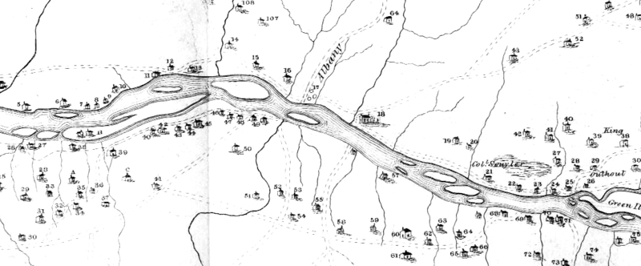

(Click on any feature)
Houses in the Manor and along the River

Key to numbers on the map of the West side of the Manor:
1. Scarleta Coiemans
2. Saml. Coiemans & Verplanks
3. The Homestead of Henry Ten Eyck
4. Rensselaer Nicoll, Esq.
5. Adam Winne
6. Hendrick van wie, alias groete Handrick (probably Hendrick Van Wie, Jr.)
7. Jan van wie
8. van wie
9. Betty van ostrande
10. James Taylor
11. Gerrit Van Den Bergh
12. Cooper
13. William Van Bergen, alias the Read House
14. Abm. Slingerland
15. Hitchen Holland's Place
16. Philip Scuyler
17. ALBANY
18. The Patroon's at Watervliet
19. Late Jeremiah Schuyler's Place
20. Peter Schuyler's Place
21. Late Colonel Philip Schuyler's Place
22. James Sharps
23. Guy Youngs
24. Stonehook
25. The Ferry
26.Jonas Outhout
27. Hans van arnem
28. Cornelis Van Den Bergh
29. Abraha Van Den Bergh
30. Lansing
31. Henry Lansing
32. Cornelis Ouderkerk
33. Derek Hemstraet
34. Hans Lansing
35. William Liverse
36. Douw Fonda
37. Frans Lansing
38. Cornelis Van Den Bergh, alias
30. the old place of Abr. Van Den Bergh
40. Wirt Van Den Bergh
41. Jan Outhout
42. Henry Bullsing
Houses West of Albany (mostly along the Kings Highway and the Normanskill)
57. John Crannel
Houses still further South of Albany but not yet shown (for now find on online map)
128. Dan Frans Winne
notes
Map surveyed by John R. Bleecker in 1767. Numbered houses are referenced by a printed key. Engraving included in Documentary History, 3:916-17. Prints are available in Albany-area bookstores and online. A better-quality printing of the map including the keys to settlers' names appears online from RPI. The images used on this page are black and white and low resolution yet Internet friendly adaptations.
This resource is the first comprehensive visualization of the Van Rensselaer leaseholders and probably was ordered when the new Patroon came of age in 1763.
first posted 4/01/02; last revised 9/13/13
64.Christy at Sand Bergh
65. John Ritchies at the Knil
66. the Verbergh
70. The Normans Kills People
71. Isaac Truax
129. Danl Peter Winne
130. Old Peter Winne
135. Tobias Ten Eyck (west side near southern boundary line)
2.jpg){kind=link}